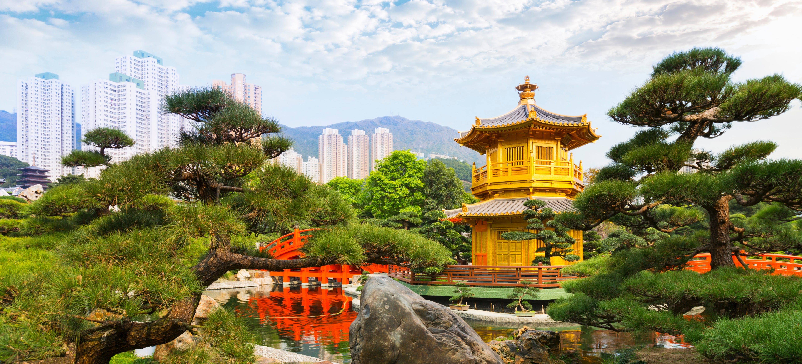

Mejor Gastranomía del Mundo
CHINA
- Sobre China
- Cultura Culinaria
- Ingredientes Destacados
- Tradiciones
- Recetas Tradicionales de China
- Restaurantes Recomendados
Sobre China
Una de las características de China más importante es su flora y fauna, debido en parte a su vasta extensión. Cuenta con más de 34.687 especies de anfibios,aves, mamíferos, reptiles y plantas vasculares. Esto le convierte en el tercer país más biodiverso de la Tierra, después de Brasil y Colombia.  Referencia
Cultura Culinaria
Los invitamos a ver el siguiente video sobre Cultura Culinaria China
Los 5 ingredientes más usados en China
- Tofu
- Vinagre de arroz
- Vino de arroz (Shaoxing)
- Ajo
- Jengibre
Tradiciones de China
Festival de Primavera:
El Festival de Primavera, también conocido como el Año Nuevo chino, es una de las tradiciones más importantes y celebradas en la cultura china. Durante este festival, las personas viajan para reunirse con sus seres queridos,
se intercambian sobres rojos con dinero como símbolo de buena suerte y se disfruta de deliciosa comida y fuegos artificiales.
Festival de los Faroles:
Este festival se celebra el decimoquinto día del primer mes lunar y marca el final de las celebraciones del Año Nuevo chino. Durante este festival, se encienden y exhiben hermosos faroles de colores en las calles y se realizan
desfiles y actuaciones tradicionales.
Festival del Barco del Dragón:
Este festival se celebra el quinto día del quinto mes lunar y conmemora la muerte del poeta Qu Yuan. Durante este festival, se realizan carreras de barcos de dragón y se comen zongzi, que son pasteles de arroz envueltos en hojas de bambú .
ReferenciaRestaurantes más Populares de China
- Quanjude (Pekín): Este restaurante tiene una gran reputación por su Pato a la pekinesa y ha estado en funcionamiento durante más de 143 años . Restaurante Quanjude
- Donglaishun (Pekín): Es conocido por su especialidad, el Pot mongol, que consiste en lonchas finas y tiernas de cordero escaldadas que se comen envueltas
en tortitas de harina y mijo, con salsa dulce de harina fermentada, pepino y cebolla .
Restaurante Donglaishun
- Asia Gallery (Madrid): Situado dentro del Hotel Palace de Madrid, este restaurante ofrece platos exquisitos de la cocina tradicional cantonesa en un entorno sofisticado. Restaurante Asia Gallery